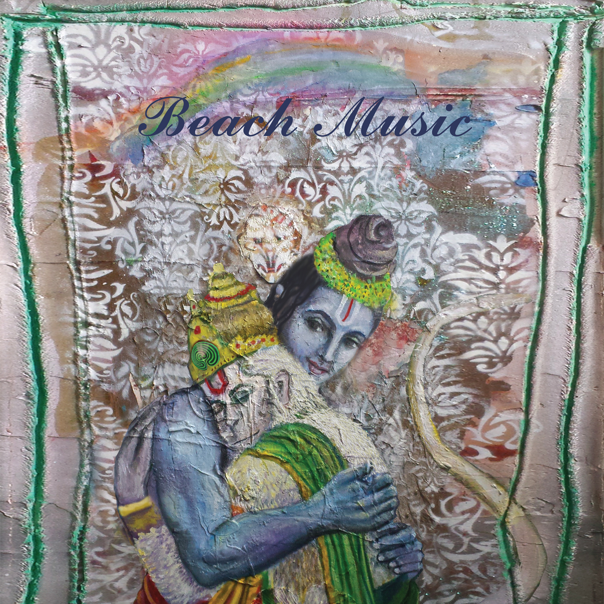

'Beach Music', 10 Years Later
 Five years ago, Alex G was a decade into his career, eight studio albums in, and still lingering in the hundred-thousand-listener middle class of the indie rock food chain. Then 2020 came, and millions of teenagers cloistered into their bedrooms discovered the scrappy bedroom-pop of his back catalogue on TikTok. It’s been a meteoric rise ever since. His recent tour sold out almost all its dates, he cracked 10 million monthly listeners this year, and he’s even opened stadium tours for the Foo Fighters, for some reason. As I write this, ‘Treehouse’ unfathomably still has more streams than almost all of Charli XCX’s catalogue (only ‘Boom Clap’, ‘360’, and ‘Guess’ stand a chance.) By all accounts, he’s made it.
But things could’ve been very different. Ten years ago, it really seemed like Alex G was poised for a major breakthrough. His latest effort at the time, 2014’s DSU, had garnered him a wave of new fans, critical acclaim, and the kind of hushed media fervor that’s typically reserved for five-star college football recruits. The Fader anointed him “the Internet’s secret best songwriter”. Rolling Stone labeled him “a dorm-room prodigy”. Rivers Cuomo called the song ‘Harvey’ “nice”. Lukewarm endorsement notwithstanding, all the lights were going green – he’d just dropped out of college to begin touring full-time, signed a deal with Domino Records, and music publications were excitedly awaiting his label debut. With the backing of a major indie and the most eyes he’d ever had on him, he was ready for his star moment. So, Alex, what are you going to sing for us? Something cute, like ‘Sarah’ or ‘Harvey’?
Ten years later, Beach Music still stands as the strangest, most isolating album he’s ever released. Looking at the albums it sits between, it seems like a complete anomaly. DSU was a clear-eyed and fiery 90s indie rock gem, Rocket was a rootsy transmission from a child lying down in tall grass. But Beach Music was, and still is, otherworldly, surreal, and nauseating. The songs are swathed in cheap, queasy synths, the characters drift around aimlessly, the songs take turns being sung by aggressor, victim, and bystander. The vocal deliveries are at turns barely audible or strained, twisted-off, creaky and malevolent, and a white-noise room tone suffocates the record as if each track had to be gained up for being recorded too quietly. Given the biggest stage of his career so far, he turned his back and feinted towards his most interior instincts.
Which makes sense, given the circumstances at the time. Despite his reticence to ascribe any surrounding narratives to his albums (“I don't know what it is that people like so much besides the music, you know?”), Beach Music was the product of a period of incredible upheaval for Alex G, and it imprints itself on the music. When he signed to Domino and made the transition from student to full-time touring musician, he went all in, touring the end of 2014, then all of 2015, then all of 2016 – his next month off wouldn’t be until January of 2017. Beach Music was written during the first few months of this lifestyle, when he was still adjusting to the liminal, stop-start life of a touring musician. Where past albums were filled with songs written in hours or days, these songs were crafted over months as he trekked from city to city across America and Europe during the winter of 2014. Reflecting on this period, he stated “During DSU and the ones prior to that, I was working and going to school. After that record, I had to tour a lot...so that gave [Beach Music] a little more of a chaotic feeling than DSU and the ones prior to that.”
“A little more of a chaotic feeling”? What does that sound like?
‘Intro’ clicks on, and there’s no music. It’s a field recording. Brief mutters are heard, movements are made, then someone clicks play on a laptop demo. The track fades in – chugging, metallic guitars stumble in over jagged breakbeats. The demo seizes and jerks, the guitars glimmer like strange lights overhead, then Rachel Giannascoli, Alex G’s sister, makes her first (and so far only) vocal appearance in his discography. Her delivery is too obscured to be intelligible, but the attitude is unmistakable – glaring, possessed, hypnotized. The guitars turn to manic howls. This is Alex G? Why isn’t he singing? Why are there Aphex Twin-breakbeats? And why does it sound so evil? But then it all goes out as quickly as it came in – out goes the noise, and in fade the soothing acoustic strums of ‘Bug’, the album’s lead single and most accessible track. This is his philosophy – to cut the dark with the light, to build the tension then break it, and the album fully opens up from here, leading us into the surreal grey dreamworld of Beach Music.
Though most of Alex G’s albums have been bedroom productions, none have ever really sounded like the product of a shut-in – except for Beach Music. The album sounds like it was recorded in a room that’s never seen sunlight. All the hallmarks of his early production style are here – the quiet vocals, the close-miced guitars, the roomy drums – but never had they been deployed to such claustrophobic effect. ‘Bug’, a track that seems a distortion pedal away from being a pop-punk song, is instead turned inward and intimate on the studio recording. His vocals barely rise above a whisper, the acoustic guitars are strummed a millimeter away from your ear and the drums shuffle along in a drowsy, eyes-half-closed kind of sleepwalk. Even ‘Kicker’, the most muscular track here, is relatively subdued. At live shows, it brings the house down, here, it induces a meditative head nod.
Contributing to the unease, we also see synths and drum machines co-star with the guitars for the first time. Given a label recording budget, he instead chose to dig into the back of his closet and pull out the cheapest keyboard he could find. It’s hardly a Kid A style left-turn, but given his reticence to expand his sound palette by any margin (he wouldn’t ditch his $40 USB microphone or even own a guitar capo until 2019’s House of Sugar), its inclusion is worth noting. ‘Salt’ wouldn’t be the same without those gaudy keyboard toms that kick in the intro or the strange, four-chord organ interlude that appears halfway through the song before vanishing as abruptly as it came in. ‘Thorns’ sways in waltz-time to a lurching guitar riff, but it’s the organs in the background that make you feel seasick, and when those chintzy synthesized guitars introduce themselves a minute in, they sound like they’re laughing.
In interviews around the time of recording, Alex G professed his love for Hemingway’s ‘iceberg method’ of writing, where “hopefully the listener can pick up that there is something under the surface—they don't know what it is, but they know it's really scary." Past records would tend to lean on tropes to achieve this, with drugs, ‘666’, and ‘not being anywhere’ acting as shorthand for the kind of displaced youthful malaise he was trying to evoke. With Beach Music being the transitory album he’d record as he crossed from student life to “real” life, we see a shedding of that approach – the songwriting becoming less youthful and growing in abstraction and maturity. ‘Kicker’ features some of his most evocative songwriting to date, and it could be read as a reaction to the chaotic new environment he’d found himself in. He free-associatively describes a frenetic vignette where triggers are pulled, eyes are rolled back, heart attacks are had, and a ship is on course for a storm it’s not getting out of. At the end, he leaves us with the oblique equation, “Heaven, maybe freedom / what’s the word, right I forgot / quiet is the closest thing we got”, before a loud thorn of guitar feedback immediately comes in to undermine it.
All this coheres to create a chaotic, surreal world, inhabited by his strangest cast of characters yet. On ‘Look Out’ he’s a sinister voyeur watching from afar, on ‘Mud’ he’s a malevolent child, cursing listeners, and ‘Station’ finds him stumbling and wild, drunk outside of a gas station, oscillating between delusions of grandeur and the verge of collapse. But once the songs are over, the characters vanish back into their hermetic worlds – there’s no story arc here, the mode of operation is associative, not linear. Beach Music has waypoints that point toward structure – the fake-out intro into the single, ‘Station’ the ending scene, ‘Snot’ as the credits go up – but ultimately there’s no journey here. Listening to Beach Music is like being plucked up from the ground to hover in grey for 37 minutes before being dropped back down to earth.
Two tracks in particular, ‘Salt’ and ‘Snot’, stand out both as the centerpieces of their respective sides and the oldest songs on here, both dating back to nascent (but incredible) Skin Cells-era demos around 2011. Four years in the bunker have developed them into some of the most enduring songs in his catalogue; in an album full of swirling vignettes, they stand as the pillars around which the entire album anchors its emotion. ‘Salt’ remains one of the most depressing songs he’s ever released. Over spacey drum-machines and a deliberate, creeping guitar riff, he paints a vignette where a child floats through the rooms of a house, incorporeal, totally isolated but feigning happiness in their neglect (‘don’t take me with you’ / ‘I’m happy where I am’). So many subtle turns in the song invoke avalanches of emotion – it’s the way he squeezes out ‘don’t make me hurt you’ like he’s crying while holding the knife, or the way the child vocals all layer together at the end into the world’s saddest canon choir. It’s devastating.
And it would be the best track on the album, were it not for ‘Snot’. It’s the latter of the two tracks that’s steadily grown in acclaim over the years, becoming a regular fan request at encores and being played more than it ever was on the Beach Music tour. The shimmering, spiraling guitars that open the track immediately induce a trance-like state, and even Alex G’s darkest lines can’t break the spell. The vocals drift in, and a child blankly describes a scene of assault with uncanny abstraction (‘I saw you’ / ‘sparkling’ / ‘and squirming’ / ‘under him’) and the emotional remove of someone a million miles away – they know something’s wrong, but also know exactly when to completely detach (‘I know now’ / ‘what’s right and wrong’ / ‘and I know where’ / ‘to turn that off’). In the closing lines of the track, he does more in 13 words than other artists do in 13 years, rendering abusive dependency down to a perfect haiku (‘my love comes’ / ‘with my snot’ / ‘I’m all in’ / ‘and he’s all out’). Then the infinite guitars take us away, ebbing and flowing, playing us out in an extended, 3-minute long outro that feels like it could go on forever. And it almost does, until the waves crash back over us a minute later, the intro reprising itself, the guitar lines spidering back upwards into the sky. It’s the best moment in his discography. I could listen to it forever.
When asked what “Beach Music” meant, he said it was a meaningless title he stole from a book, when asked what the cover meant, he deferred to his sister, and when asked what the theme of the album was, he responded ‘isolation, I guess’. All this can seem deliberately obtuse. But it’s not so much an aversion to clarity as it is him placing the listener’s personal experience over any prescriptive kind of meaning. All the decisions on the record seem cryptic and avoidant at first, but that title comes into perspective when you read it as less Florida and more On the Beach, and that cover with its Mona Lisa smile and enigmatic stare comes into coherence after soaking in the blank emotional distance of the songs. It’s not so much that he’s shrugged his way into every artistic decision he’s ever made, although it can seem that way. He deeply values the personal aspect that listeners take away from the music, and although Beach Music is his least immediate, it’s the record in his discography that continues to give back the most.
Beach Music didn’t end up ending his career by any stretch, but it arguably did nothing to kickstart it. Existing fans weren’t alienated and the music press received it positively (though with praise more tempered than for DSU), but that crossover audience wouldn’t come for three more albums. It washed up onto shore, and then it went out with the tide. Even now, it lies in the gap between the two distinct Alex G eras, between the shaggy bedroom rock of his early period and the cohesive, polished albums that would come out later to mass critical acclaim.
Which is where this album belongs. It belongs in the gutter, in the in-between, seemingly hovering outside of time. Revisiting this album is like going back to the childhood home of your dreams – everything will always be just as you left it, there’s no dust on the windowsill, the candles are still lit and burning into the night. If at first it made little impact on our world, it’s only because it existed so readily within its own. It stands alone, quiet and isolatory, beamed in from another dimension where the bedroom windows are eternally blacked out and a constant, quiet rain is falling.